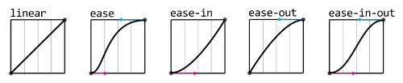

CSS3 動畫基礎

在 JSConf.Asia 2013 ， Lea Verou 介紹了 CSS in the 4th dimension (影片) ，引發了整個 Web 界對 CSS 動畫的期盼；在 CSS動畫簡介一文也已經把重點整理好了。
以下我們將會介紹主要兩個 CSS3 在動畫的屬性： Transition 與 Animation ，並配合實例來練習這些技術，後面我也會介紹一些不錯的相關開發工具。
Transition
在以往 HTML 元素在兩種外觀之間的變換，只能從一種外觀直接跳到另一種外觀，瀏覽者並沒有辦法感受到這兩種外觀中間平滑的轉換，造成了視覺上的不適。
基本的 transition
而 CSS 為了補足這方面的視覺轉換特效，特別加入 transition 屬性。 一個簡易的動畫效果就是在想要變化的狀態上，加入一個 transition 屬性，而其值為變化需歷時的秒數。
div:hover {
...
transition: 1s;
}
這麼一來， transition 就會自動幫我們補足中間的過場動畫。例如我們希望上面的例子能平順地轉換，歷時一秒：
我們也可以讓高度以外的屬性有動畫效果，例如顏色：
transition 屬性詳解
transition 屬性其實跟 font 或 background 屬性一樣是簡寫屬性，它是以下四個屬性的總和：
transition-property: 要做變換的 CSS 屬性transition-duration: 變換需要的時間，單位為s或mstransition-delay: 延遲多久後開始變換，單位為s或mstransition-timing-function: 稱為 Timing Funciton ，用名稱來定義變換時的加速度。
這些屬性可以分開寫，也可以將它們的值同時寫在 transition 屬性裡；唯一要注意的是 transition-duration 與 transition-delay 的值寫在一起時有前述的順序關係。前面例子中的 transition: 1s ，其 1s 即為 transition-duration 的值。
transition-property 可使用 transition 的屬性
不是所有 CSS 屬性都可以使用 transition ，可以參考這篇 CSS animated properties 得知有哪些屬性可以使用 transition 。
transition 預設是對所有可套用的屬性做轉場效果，也就是關鍵字 all ；但其實也可以只針對某個屬性做 transition 變化，其他屬性則維持原來的直接變化。
針對不同屬性同時做 transition
如果希望對兩個以上的屬性做 transition ，可是又不希望影響其他屬性時，可以用逗號 , 將要做 transition 的屬性分隔開來。
transition-delay 延遲變換
有時候我們需要先變換一個屬性，再變換另一個屬性，這時候就需要對後者加入一個延遲時間；它需要加在原先我們定義好的歷時時間之後。
transition-timing-function Timing Funciton
Timing Funciton 包含數種模式，下圖可以看出它們的加速度曲線。

linear: 匀速ease: 急加速後減速 (預設值)ease-in: 加速ease-out: 减速ease-in-out: 較平緩的easecubic-bezier: 自定義速度模式
cubic-bezier 函式
利用貝茲曲線函式來定義加速曲線，可以直接使用線上工具 cubic-bezier() 來找出需要的數值。
雙向的 transition
Transition 的效果只會作用在有加入 transition 屬性的那個狀態，一旦要回復至原來的狀態時，就會失去 Transition 的平順效果了。這時我們需要對原先的狀態，也加入 transition 。
Transition 的限制
transition 的開始和結束都必須是具體數值；例如以下的 CSS 屬性值之間是無法被計算的，就無法使用 transition ：
height: auto(不確定的值) 至height: 100px(具體數值)display: none至display: blockbackground: url(foo.jpg)至background: url(bar.jpg)
另外 transition 需要事件來觸發它的動作，所以沒辦法在一進頁面自動產生效果。所以如果不透過 JavaScript 事件處理的話，就只能配合與事件有關的 Pseudo Classes (偽類別，即 :hover 、 :focus 等) 來呈現效果了。
搭配 jQuery
如果搭配 jQuery 等可以操作 DOM 元素的 library ，我們就可以做更複雜的操作。
瀏覽器支援
目前包含 IE 10+ 的主流瀏覽器都已經支援 transition ，可參考 Can I use 。
Animation
雖然 transition 屬性簡單易用，但也有上述的侷限。因此就有了 animation 這個屬性來彌補其不足。
基本的 Animation
最基本的 animation 要指定動畫持續的時間，還有動畫的名稱。
div:hover {
animation: 1s fat;
}
而動畫的定義則是用 @keyframes 這個屬性，例如：
@keyframes fat {
0% { width: 100px; }
50% { width: 150px; }
100% { width: 200px; }
}
在 @keyframes 中可以定義多個狀態，範圍可從 0% 至 100% 。另外 0% 可寫成 from ， 100% 可寫成 to ，其他狀態還是使用數字百分比。
animation 屬性詳解
animation 屬性和 transition 屬性一樣，都是簡寫屬性。它代表以下屬性的總和：
animation-name: 動畫名稱animation-duration: 播放一次動畫需要的時間，單位為s或msanimation-timing-function: 動畫的加速度曲線animation-delay: 延遲多久後啟始動畫animation-iteration-count: 動畫播放次數，可用infiniteanimation-direction: 動畫播放方向animation-fill-mode: 指定動畫播放前後的狀態animation-play-state: 指定動畫播放或暫停
其中 animation-duration 、 animation-timing-function 、 animation-delay 可參考上面 transition 相似屬性的介紹。
animation-iteration-count 播放次數
預設 animation 和 transition 一樣只會動作一次，但我們可以加入數字來指定動畫效果播放的次數。
或是以 infinite 這個關鍵字來無限次播放。
animation-direction 播放方向
所謂的播放方向是指從動畫效果 0% 到 100% 的方向，同時也是預設的 normal 值。可供設定的值如下：
normal：每次播放都是從 0% 至 100%reverse：每次播放都是從 100% 至 0%alternate：播放兩次以上的話，會從 0% 至 100% ，再從 100% 回到 0% ，以此類推alternate-reverse：跟alternate相反，會先從 100% 開始播放
animation-direction: reverse ：
animation-direction: alternate ：
animation-direction: alternate-reverse ：
例：animation 播放方向 alternate-reverse
animation-fill-mode 動畫播放前後的狀態
如果想要控制動畫播放完後的最終狀態，可以用 animation-fill-mode 屬性，它可設定的值如下：
none：回到未播放動畫效果前的狀態forwards：停在動畫的最後一個狀態上backwards：停在動畫的第一個狀態上 (實測不出來)both：視animation-direction來決定停在哪一個狀態上。
例：指定 animation 播放後的狀態 forwards
註： backwards 這個值我在 Chrome 和 Firefox 都試不出來。
animation-play-state 指定動畫播放或暫停
animation-play-state 有兩個屬性值： running 及 paused ，其中 running 是預設值。
這個屬性必須獨立定義，無法被放在 animation 屬性裡。
瀏覽器支援
animation 屬性目前在 IE 10+ 以上主流瀏覽器都可以執行，但採用 Webkit 引擎的瀏覽器必須加上 -webkit- 前綴字串。
div:hover {
-webkit-animation: 1s name;
animation: 1s name;
}
@-webkit-keyframes name {
...
}
@keyframes name {
...
}
實例
接下來我們用 Animation 搭配 Transform 來做簡單的旋轉動畫。 Transform 是用來讓 HTML 元素變形的屬性，雖然跟動畫沒有直接的關係，但它是可以套用動畫效果的。這邊我不打算詳細介紹它，只會用到旋轉的效果。
它的語法如下：
div {
transform: rotate(θ);
transform-origin: x y;
}
rotate(θ) 是指讓指定元素以參考點為中心軸 2D 旋轉 θ 度， transform-origin 會將 (x, y) 設為參考點。當我們把 transform: rotate(θ) 放到 @keyframes 中時， animation 就會改變 θ 值來做出動畫效果。
以下模擬簡單的太陽、地球、月亮的週期變化。
更酷的範例參考：
- 20 stunning examples of CSS3 animation
- Our Solar System
- 30 Best Creative CSS3 Animation Examples
- Codepen.io CSS Animation
開發工具
CSS 3.0 Maker
CSS 3.0 Marker 可以讓我們調整 CSS3 相關屬性的參數，並預覽效果。確認後就可以產生對應的 CSS 碼，套用到專案上。
Animate.css
Animate.css 這個 CSS framework 提供很多組已經定義好動畫效果的 CSS class ，讓我們可以直接套在 HTML 元素上，或是搭配 jQuery 來操作 class 來產生動畫效果。
Animate Mixin for Compass/SASS
Animate Mixin for Compass/SASS 提供了一組很棒的 CSS3 Animation mixins ，讓我們可以直接套用。它其實就是從 Animation.css 移植過來的。
AniJS
AniJS 是一個宣告式的 CSS 動畫 library ，它讓我們可以在 HTML 元素中加入一個 data-anijs 屬性，並用敘述式來定義動作事件、動畫效果、以及要作用在哪個元素上。